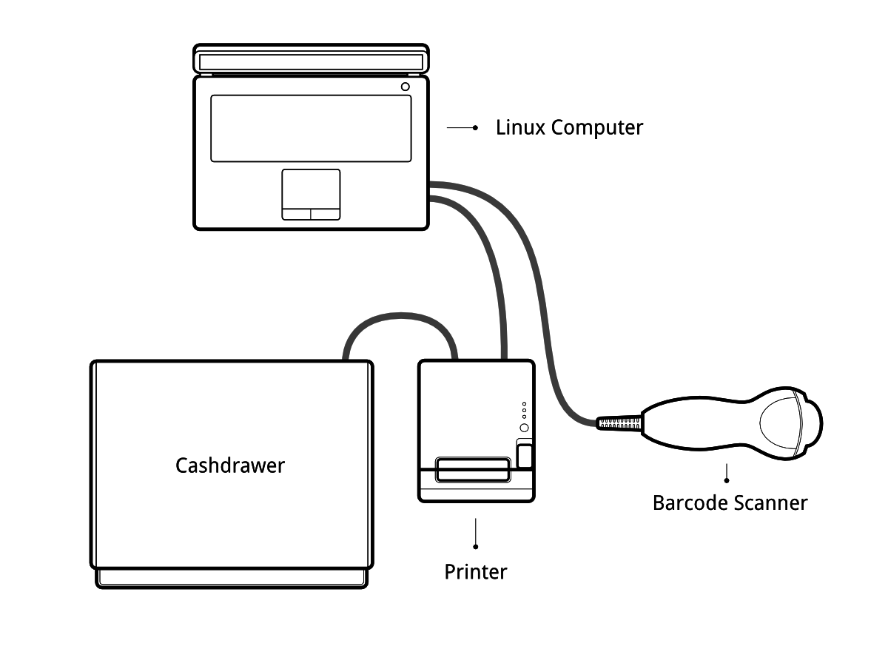

Руководство по настройке POSBox

Подготовка
Прежде чем вы начнете настраивать POSBox убедитесь, что у вас есть все для этого необходимое. Вам понадобится :
Сам POSBox
Блок питания на 2 ампера
Компьютер или планшет с современным браузером
- A running SaaS or Odoo database with the Point of Sale installed
Подключение к локальной сети с DHCP(это настройки по умолчанию)
Epson ТМ-Т20 принтер или другой ESC/POS совместимый принтер с USB интерфесом (официально поддерживаеме принтеры указаны на странице РМК оборудования <https://www.odoo.com/page/pos-ipad-android-hardware>`_)
Honeywell Eclipse USB Сканер Штри-Кодов или любой другой совместимый сканер
Ящик кассира совместимый с Epson принтером
- An RJ45 Ethernet Cable (optional, Wi-Fi is built in)
Инструкция по установке
Новая версия POSBox (после 2015 год)
Подключите периферийные устройства
Официально поддерживаемый список оборудования вы найдете на странице Страница с оборудованием для РМК, но и другое оборудование будет работать хорошо.
Принтер: Подключите ESC/POS принтер к порту USB и включите его в розетку.
Денежный ящик: Денежный ящик должен быть подключен к принтеру через кабель RJ25.
Сканер штрих-кода: Подключите сканер штрих-кодов. Для того, чтобы ваш сканер штрих-кодов, был совместим, он должен вести себя как клавиатура и должен быть настроен на US QWERTY. Он также должен заканчивать штрих-код символом Ввод (код клавиш 28). Данные настройки позволят сразу начать работать с вашим сканером штрих-кодов.
Весы: Подключите свои весы и включите их в розетку.
Локальная сеть: Если вы не хотите использовать Wi-Fi, подключите Ethernet-кабель. Убедитесь в том что POSBox подключен к той же сети, что и устройство РМК.
- Wi-Fi: The current version of the POSBox has Wi-Fi built in. Make sure not to plug in an Ethernet cable, because all Wi-Fi functionality will be bypassed when a wired network connection is available.
Питание для POSBox
Подключите адаптер питания к POSBox, должен загореться ярко-красный светодиодный индикатор состояния.
Убедитесь, что POSBox готов
После подключения POSBox подождите некоторое время, оно нужно для загрузки операционной системы на устройстве. Как только POSBox будет готов, он распечатает чек со статусом готовности и его IP-адресом. Также светодиод состояния, рядом с красным светодиодом, будет постоянно светиться зеленым цветом.
Настройка Рабочего Места Кассира
To setup the POSBox in the Point of Sale go to and select your Point of
Sale. Scroll down to the PoSBox / Hardware Proxy section and
activate the options for the hardware you want to use through the
POSBox. Specifying the IP of the POSBox is recommended (it is printed
on the receipt that gets printed after booting up the POSBox). When
the IP is not specified the Point of Sale will attempt to find it on
the local network.
If you are running multiple Point of Sale on the same POSBox, make sure that only one of them has Remote Scanning/Barcode Scanner activated.
Так же неплохо было бы сделать так, чтобы IP POSBox никогда не менялся в вашей сети. Обратитесь к документации маршрутизатора, для того, чтобы достичь этого.
Запуск Рабочего Места Кассира
Если вы явно не указали IP адрес для POSBox в конфигурации РМК, вам потребуется некоторое время для того чтобы просканировать сеть и найти POSBox. Это делается один раз.
Теперь ваше Рабочее Место Кассира подключено к POSBox и ваше оборудование готово к работе.
Настройка Wi-Fi
The most recent version of the POSBox has Wi-Fi built in. If you're using an older version you'll need a Linux compatible USB Wi-Fi adapter. Most commercially available Wi-Fi adapters are Linux compatible. Officially supported are Wi-Fi adapters with a Ralink 5370 chipset.
Убедитесь, что не подключен Ethernet-кабель, так как все функции связанные с Wi-Fi будут отключены, если существует проводное подключение к сети.
Когда POSBox загружается с Wi-Fi-адаптером он создает собственную Wi-Fi точку доступа, которая называется "Posbox" и к которой вы сможете подключиться. Вся необходимая информация будет напечатана на чеке который будет напечатан после загрузки POSBox. Для того, чтобы подключить POSBox к уже существующей Wi-Fi сети перейдите на главную страницу POSBox (указано на чеке) и перейдите на страницу настройки Wi-Fi. Там вы можете выбрать сеть для подключения. Обратите внимание, что мы поддерживаем только открытый и WPA(2)-PSK сети. При подключении к WPA сети, заполните поле пароль. POSBox пытается подключиться к указанной сети и распечатает новый чек со статусом POSBox после того, как он будет подключен.
Если вы планируете постоянно использовать POSBox с Wi-Fi, вы можете использовать флажок "постоянно" на странице конфигурации Wi-Fi при подключении к сети. Это приведет к тому, что выбор сети будет сохраняться при перезагрузке. Это означает, что вместо запуска собственной сети "Posbox" она всегда будет пытаться подключиться к указанной сети.
Когда POSBox не удается подключиться к сети, он вернется обратно, начиная с создания своей собственной "Posbox" точки доступа. Если потеряно соединение с Wi-Fi после подключения к нему, POSBox будет пытаться восстановить подключение автоматически.
Настройка нескольких РМК с одним POSBox
Рекомендуемый способ установки магазина с несколькими РМК является тот при котром каждому РМК соотвествет свой POSBox. В этом случае необходимо вручную указать IP-адрес каждого POSBox в каждом РМК. Вы также должны настроить вашу сеть, чтобы убедиться, что IP-адреса POSBox не меняются. Пожалуйста, обратитесь к документации маршрутизатора.
Руководство по настройке РМК без POSBox (расширенное)
Если вы используете ваше РМК, основанное на Debian дистрибутиве Linux, вам не нужно POSBox так как вы можете запустить его локально в виде программного обеспечения. Однако процесс установки не столь очевиден как может показаться с первого раза. Вам нужно по крайней мере знать, как устанавливать и запускать Odoo. Вы можете также столкнуться с проблемами, специфичными для вашего дистрибутива или для вашей конкретной системы и конфигурации оборудования.
Драйвера для различных типов оборудования представлены в виде модулей Odoo. На самом деле, POSBox запускае экземпляр odoo, с которым общается РМК. Экземпляр Odoo который работает на POSBox очень отличается от реального экземпляра Odoo. Он не обрабатывает и не хранит никаких бизнес-данных (например. Кассовых чеков), а только служит в качестве шлюза между интерфейсом РМК и оборудованием.
Целью данного раздела является создание локальный экземпляр Odoo, который ведет себя как экземпляр, работающий на POSBox.
Процесс создания образа
We generate the official POSBox images using the scripts in
https://github.com/odoo/odoo/tree/11.0/addons/point_of_sale/tools/posbox. More
specifically, we run
posbox_create_image.sh.
This builds an image
called posbox.img, which we zip and upload to nightly.odoo.com
for users to download.
Скрипты в этот каталоге могут оказаться полезным в качестве эталона, если вы застряли или хотите более подробно узнать о чем-то.
Краткое описание процесса создания образа
Процесс создания изображения начинается с загрузки последней версии Raspbian образа с сайта https://www.raspbian.org/ . Затем образ локально монтируется и копируются все необходимые файлы и скрипты, которые позволят образ Raspbian превратить в POSBox, в момент его загруки. Эти скрипты обновят Raspbian, удалят неиспользуемые пакеты и установят необходимые пакеты. Для загрузки Raspbian мы использовать qemu, который способен обеспечить эмуляцию процессора ARM. После этого, эмулируемая ОС Raspbian выключится. Мы потом еще раз локально монтируем образ, удаляем скрипты, которые были использованы для инициализации системы при загрузке и копируем дополнительные конфигурационные файлы. Полученный образ готов к проверке и использованию.
Подготовка
Linux дистрибутив на базе Debian (Debian, Ubuntu, Mint, и т. д.)
- A running Odoo instance you connect to load the Point of Sale
Вы должны удалить драйвера на ESC/POS принтер, так как они могут конфликтовать со встроенным в Odoo драйвером
Инструкция по установке
Дополнительные зависимости
Т.к. Odoo работает на Python 2, вы должны проверить, какую версия pip вам необходимо использовать.
# pip --version
Если вернулось значение похожее на это:
pip 1.5.6 from /usr/local/lib/python3.3/dist-packages/pip-1.5.6-py3.3.egg (python 3.3)
То вам необходимо использовать pip2.
Если вернулось значение похожее на это:
pip 1.4.1 from /usr/lib/python2.7/dist-packages (python 2.7)
Вы можете использовать pip.
Модули драйверов требуют установки новых модулей python:
# pip install pyserial
# pip install pyusb==1.0.0b1
# pip install qrcode
Права доступа
Для драйверов необходим прямой доступ к файлам устройств принтера и сканера штрих-кодов . Это потребует немного системного администрирования. Сначала мы создадим группу, которая имеет доступ к USB-устройствам
# groupadd usbusers
Затем мы добавим пользователя, который запускает Odoo сервер в группу usbusers
# usermod -a -G usbusers USERNAME
Затем нам нужно создать правила udev, это позволит членам usbusers автоматически получить прямой доступ к USB-устройствам. Для этого создайте файл под названием 99-usbusers.rules в каталоге /etc/udev/rules.d/ следующего содержания:
SUBSYSTEM=="usb", GROUP="usbusers", MODE="0660"
SUBSYSTEMS=="usb", GROUP="usbusers", MODE="0660"
После вам необходимо перезагрузить машину.
Запуск локального экземпляра Odoo
Мы должны запустить Odoo сервер с правильными настройками
$ ./odoo.py --load=web,hw_proxy,hw_posbox_homepage,hw_posbox_upgrade,hw_scale,hw_scanner,hw_escpos
Проверка работы
Подключите все оборудование к USB-портам вашей машины, и перейдите http://localhost:8069/hw_proxy/status обновите страницу несколько раз и посмотрите, все ли ваши устройства показываются как на связи. Возможные источники ошибок: пути до устройств в дистрибутиве отличаются от путей от пути которые мониторят драйвера, другой процесс перехватил эксклюзивный доступ к устройствам, правила udev не применяются или заменено другим.
Автоматический запуск Odoo
Теперь вы должны убедиться, что Odoo автоматически запускается после загрузки. Существуют различные способы добиться этого, и как это сделать, зависит от вашей конкретной установки. С помощью системы инициализации дистрибутива, вероятно, самый простой способ для достижения этой цели.
Настройка Рабочего Места Кассира
В поле IP-адрес в конфигурации РМК должно быть 127.0.0.1 или localhost, если вы запускаете созданный сервер Odoo на компьютере, который вы будете использовать в качестве РМК. Вы также можете оставить его пустым.
Техническая документация POSBox
Технический обзор
Оборудование POSBox
Оборудование POSBox основывается на Raspberry Pi 2, популярного одноплатного компьютера. Raspberry Pi 2 работает с 2А микро-USB блоком питания. 2А необходимы для того, чтобы дать достаточно энергии на сканеры штрих-кода. Программное обеспечение устанавливается на SD карты емкостью 8 Гб 10 класса или выше . Все это оборудование легко доступно по всему миру от независимых поставщиков.
Совместимые Периферийные Устройства
Список официально поддерживаемого оборудования значится на странице РМК оборудования.
Программное обеспечение POSBox
В POSBox работает сильно измененный Raspbian Linux, производный дистрибутив от Debian для Raspberry Pi. Он также выполняет установку обезжиренного экземпляра Odoo, который обеспечивает работу только WEB-сервера и драйверов. Драйверы оборудования реализованы как модули Odoo. Эти модули все с приставкой hw_* в названии и это единственные модули, которые работают на POSBox. Odoo используется только в рамках тех возможностей, которые она предоставляет. Никакакие бизнес данные не обрабатываются и не хранятся на POSBox. Данный экземпляр Odoo представляет собой избирательный git-клон ветки 8.0.
Корневой раздел на POSBox монтируется только для чтения, гарантируя,то что мы не затаскаем SD-карту, использовав слишком много циклов записи. Это также гарантирует, что файловая система не может быть повреждена внезапным отключением POSBox. Приложения Linux ожидают, что могут иметь возможность записи хотябы в определенные каталоги. Поэтому мы предоставляем рамдиск для каталогов /etc и /var (Raspbian автоматически предоставляет его для в /tmp). Эти рамдиски устанавливаются setup_ramdisks.sh, который мы запускаем, прежде чем все остальные скрипты, запустив его в /etc/init.d/rcS. Рамдиски называются /etc_ram и /var_ram соответственно. Большинство данных из /etc и /var копируется в эти диски с файловой системой tmpfs. Для того, чтобы ограничить размер рамдисков, мы не копируем туда определенные вещи (к примеру данные менеджера пакетов apt). Затем мы привязываем их к оригинальным каталогам. Таким образом, когда приложение записывает в файл /etc/foo/bar оно на самом деле пишем в /etc_ram/foo/bar. Мы также связываем / с /root_bypass_ramdisks, чтобы иметь возможность получить реальный файл /etc и /var в процессе разработки.
Логи Odoo сервера с можно найти по адресу:
/var/log/odoo/odoo.log
Различные скрипты связанные c POSBox (например. Wi-Fi скрипты) работающие на POSBox будут делать записи в лог в /var/log/syslog и эти сообщения будут с тегами posbox_*.
Доступ к POSBox
Локальный доступ
Если вы подключите QWERTY USB клавиатуру в один из USB-портов POSBox, и подключите монитор к HDMI порту POSBox, вы можете использовать его как маленький GNU/Linux компьютер и выполнять различные задачи администрирования, такие как просмотр журналов логов.
POSBox будет автоматически входить в систему как root в терминал по умолчанию.
Удаленный доступ
Если у вас есть IP-адрес POSBox и SSH-клиент, вы можете получить удаленный доступ к системе POSBox. Учетные данные для входа pi/raspberry.
Обновление программного обеспечения POSBox
Обновляйте POSBox только в том случае, если у вас возникли проблемы или вы хотите использовать недавно реализованные функции.
Лучший способ для обновления программного обеспечения POSBox, это скачать новую версию образа записать его на SD-карту. Эта операция подробно описана здесь, просто замените стандартный образ Raspberry Pi последним найденым на официальной странице POSBox. Этот способ обновления будут гарантировать, то что вы используете последнюю версию программного обеспечения POSBox.
Второй способ - обновление через встроенный интерфейс, который может быть найден через страницу POSBox. Хорошая вещь в этом варианте обновления, это то что вы не должны записывать новый образ. Этот метод ограничен в том что он может сделать. Он не может, например. обновить конфигурационные файлы (как например. файл /etc/hostapd.conf). Его можно только модернизировать:
Внутреннее приложение Odoo
Скрипты в каталоге
odoo/addons/point_of_sale/tools/posbox/configuration/
Если есть сомнения, всегда пользуйтесь первым методом обновления.
Устранение неполадок
РМК не может подключиться к POSBox
Самый простой способ убедиться, что POSBox правильно настроен, это включить подключенный принтер который распечатает чек при возникновении какой-либо ошибки с ее указанием или IP-адрес POSBox в случае успеха. Если чек не печатается, проверьте следующие шаги:
Убедитесь, что POSBox включен, обозначается ярко горящим красным светодиодом.
Убедитесь, что POSBox готов, на это указывает ярко горящий зеленый светодиод рядом с красным. POSBox должен быть готов ~2 минуты после его включения.
Убедитесь, что POSBox подключен к той же сети, что и устройство РМК. Как само устройство так и POSBox должны быть видны на маршрутизаторе в списке устройств, подключенных к вашей сети.
Убедитесь, что ваша сеть настроена с помощью DHCP и выдает IP-адреса в диапазоне 192.168.0.Х, 192.168.1.Х, 10.0.0.Х. Если вы не можете настроить вашу сеть таким образом, вы должны вручную настроить IP-адрес вашего POSBox.
Если вы указали IP-адрес POSBox в конфигурации, убедитесь, что он соответствует напечатанному на чеке отчету о статусе POSBox.
Убедитесь в том, что РМК не загружается по https.
Ошибка в реализации протокола http в Firefox предотвращает автоопределение и не работает стабильно. При использовании Firefox, вы должны вручную настроить IP-адрес POSBox в конфигурации РМК.
Сканер штрих-кодов не работает
Сканер штрих-кодов должен быть настроен в US QWERTY и посылать сигнал нажатия Enter после каждого штрих-кода. Это конфигурация по умолчанию для большинства считывателей штрих-кодов. Обратитесь к документации на устройство чтения штрих-кодов для получения дополнительной информации.
В POSBox требует источника питания 2А для работы с некоторыми сканерами штрихкода. Если Вы не используете родной блок питания, убедитесь, что вы используете другой с достаточной силой тока.
Некоторым сканерам штрих-кодов потребуется больше, чем 2А и не будет работать, или будет работать ненадежно, даже при наличии электропитания. В этих случаях можно подключать сканер штрих-кода к USB-концентратору с автономным питанием.
Некоторые бюджетные сканеры штрих-кодов рекламируют себя не только как сканеры штрих-кодов, но и как USB-клавиатура, и они не будут признаны POSBox.
Сканер штрих-кодов не надежно работает
Убедитесь, что не более одного устройства со включенным параметром 'Сканировать через прокси'/'Сканер штрих-кодов' подключены к POSBox в одно и то же время.
Печать чека занимает слишком много времени
Ожидается небольшая задержка перед первой печатью, так как POSBox будет сделать предварительную обработку, чтобы ускорить следующую печать. Если вы страдаете от задержек, это скорее всего из-за плохого сетевого соединения между РМК и POSBox.
Некоторые символы не правильно печатаются на чеке
В POSBox не поддерживает все языки и символы. В настоящее время поддерживаются кодировки на основе латиницы и кириллицы, с базовой поддержкой японского языка.
Принтер не доступен
Убедитесь, что принтер подключен, на него подано питание, достаточно бумаги и закрыта крышка, и нет сообщения об ошибке. Если ошибка остается, обратитесь в службу поддержки.
Денежный ящик не открывается
Денежный ящик должен быть подключен к принтеру и должен быть активирован в конфигурации РМК.
Благодарности
Проект POSBox разработан Frédéric van der Essen с помощью Gary Malherbe, Fabien Meghazi, Nicolas Wisniewsky, Dimitri Del Marmol, Joren Van Onder иAntony Lesuisse.
Это развитие не было бы возможным без кампании Indiegogo и тех, кто способствовал этому. Особая благодарность партнерам, которые поддержали кампанию:
- Camptocamp
- BHC
- openBig
- Eeezee-IT
- Solarsis LDA
- ACSONE
- Vauxoo
- Ekomurz
- Datalp
- Dao Systems
- Eggs Solutions
- OpusVL
А также партнеров, которые поддержали разработку с помощью POSBox Bundle:
- Willow IT
- E. Akhalwaya & Sons
- Multibase
- Mindesa
- bpso.biz
- Shine IT.